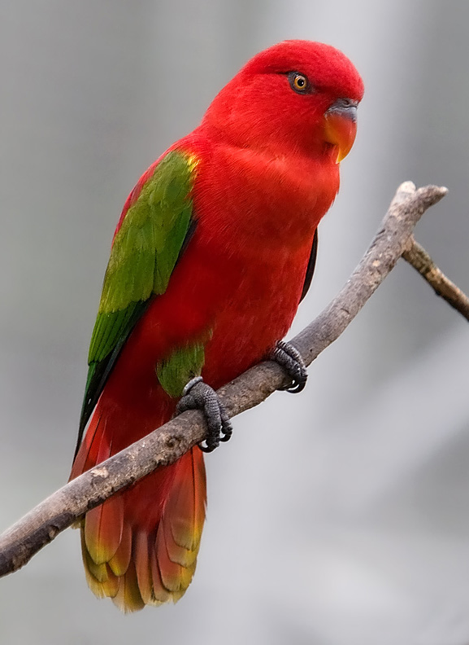

Ladina keelse nimega lorius garrulus — eesti keelses maailmas praktiliselt tundmatu lind — elab Indoneesias, Põhja-Maluku saarte vihmametsas. Garrulus tähendab vigistavat, lalisevat või häälekat, mis on talle omistatud tema jutukuse poolest. Seetõttu on ta ka inglise keeles saanud nime "chattering lory".
| Info | Täpsustus | |
|---|---|---|
| Elukoht | Vihmamets | Indoneesia Põhja-Maluku provintsi ekvatoriaalne vihmamets |
| Toit | Nektar | Neil on nektarist toitumiseks spetsiaalne haruline keel |
| Ohustatus | Ohualdis | Püütakse, et müüa lemmikloomana |